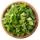
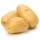

Carne de Panela

Ingredientes (6porções)
- 1 Kg de carne de acém cortada em cubos grandes;
- 2 colheres (sopa) de cebola granulada;
- água (até cobrir a carne)
- 2 colheres de sopa de milho;
- cheiro-verde desidratado a gosto;
- 5 batatas médias e cortadas ao meio.
Modo de preparo
Modo de preparo:45min.
- Em uma panela de pressão coloque óleo e a cebola, deixe até que ela fique bem moreninha.
- Junte a carne cortada em cubos médios e deixe dourar por 15 minutos.
- Junte os 2 cubos de caldo natural e o colorau a gosto.
- Coloque água até que cubra a carne, não ultrapasse a carne.
- Coloque na pressão por 25 minutos.
- Retire do fogo, tire a pressão e junte as batatas e o cheiro-verde.
- Coloque na panela de pressão novamente, conte 5 minutos após a panela de pressão começar a apitar e desligue o fogo.